特色旅游
1日游
2-4日游
5-10日游
精品长线旅游
地址：匈牙利 布达佩斯 Budapest-Keleti, 1087
电话：0036-30-9574162
邮件：rrjourneys@gmail.com
网站：http://www.rrjourneys.com
【美景】
奥地利第二大城市、国际文化中心、人权城市、世界文化遗产名录之城-格拉茨
奥地利保存最完好的古镇之一，曾经的欧洲军械库-施泰尔
欧洲文化之都、教科文组织创意城市、国家工业城市-林茨
奥地利最古老的城市、欧洲宗教改革之城-圣珀尔滕
生活质量世界第一名、世界上最富有的城市、欧洲的文化和政治中心-维也纳
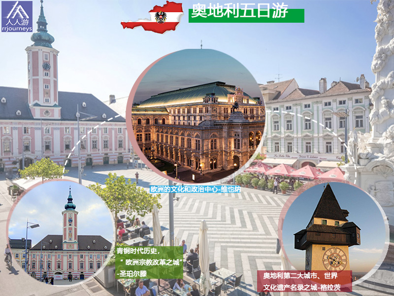
【美食】
具体行程
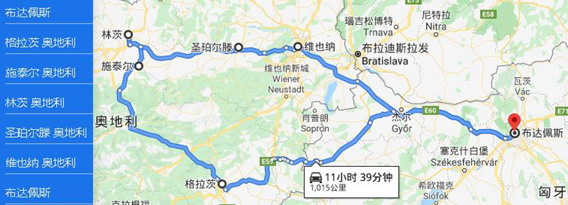
DAY 1：布达佩斯—格拉茨
入住地点：格拉茨
奥地利
奥地利自1955年以来一直是联合国会员国，在外交政治事务中永久保持中立，1995年加入欧盟，并签署了《申根协定》并于1999年改用了欧元。它是欧安组织和欧佩克的东道国，并是经合组织和国际刑警组织的创始成员。
格拉茨
格拉茨是奥地利共和国的第二大城市。城市位于两侧穆尔的格拉茨盆地。表面：127.48平方千米。格拉茨市区将近64万名居民，是仅次于维也纳和林茨都市区的奥地利第三大都市区，一直是奥地利增长最快的大都市区。由于位于欧洲文化的交汇处，又具有数百年的悠久历史，自1379年起，格拉茨就成为内奥的首都，在阿尔卑斯亚得里亚海地区获得了巨大的影响，成为国际文化中心。直到现在，也可以通过旧城区的建筑看到罗马式和斯拉夫式的文化。它被选为人权城市，并获得了欧洲奖。1993年“欧洲文化月”在格拉茨举行。1999年12月1日，格拉茨的旧城区被联合国教科文组织列入世界文化遗产名录。2003年格拉茨是欧洲文化之都。2012年奥地利的“享乐之都”，2015年它成为欧洲改革城市。格拉茨老城和艾肯贝格城堡是自1999年和2010年以来被联合国教科文组织列为世界遗产。自2011年3月起，格拉茨就被联合国教科文组织列为设计之都，成为创意城市网络的一部分。同时也是一个拥有近60,000 名学生的大学城，格拉茨-塞考教区的主教区，曾经的哈布斯堡王室的所在地。
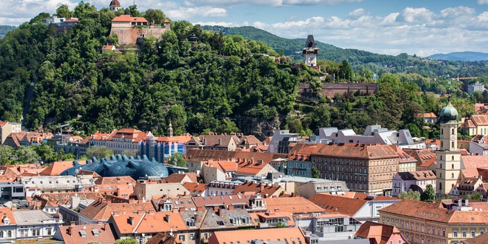
景点：格拉茨城堡 格拉茨城堡坐落在老城区的东面，内城区第一区的霍夫加斯，靠近格拉茨大教堂，建于1438年。它与格拉茨大教堂，费迪南德二世的陵墓和前耶稣会学院一起，形成了一个建筑群，也被称为格拉茨城冠。城市的王冠形成了旧城区的东端。该城堡通过有盖走廊与施洛贝格城堡相连。从1564年起，格拉茨成为内奥的首都，这座城堡成为内奥大公的所在地。并被重建和扩大。 1545年费迪南德一世将建筑大师多梅尼科·戴尔·阿利奥带到格拉茨，主要负责重建城市。1554年他在城堡中建造了文艺复兴时期的门户和楼梯。1564年格拉茨通过哈布斯堡王朝的继承分区成为奥地利内部各州的首府。为了给宫廷空间，1570年查尔斯二世大公在礼拜堂和城堡大门之间的东方中世纪城墙上方建造新的宫殿建筑，并引进了外来植物，还在动物园里放了狮子，老虎和熊，同时建造了三口井确保城堡饮用水的供应。大约在1600年，费迪南德二世大公在西南“腓特烈堡”增设了一个侧翼，即所谓的“费迪南德的建筑物”。它包含了城堡的宝库，一个艺术室和一个图书馆。
斐迪南二世大公于1619年成为皇帝并移居维也纳时，这座城堡失去了其意义，仅用作帝国宿舍。1728年城堡的建筑结构重新翻修。1783年约瑟夫二世皇帝任命这座城堡为地方政府所在地并成为官员的城堡，玛丽亚·特蕾莎将城堡中的所有艺术品，书籍和档案移交给维也纳，致使城堡不再具有昔日的辉煌。在随后的几个世纪中，翻新工程进行了几次。自1922年以来，格拉茨城堡一直是施蒂里亚州长的所在地。直到2003年施蒂里亚州投资了超过600万欧元用于格拉茨城堡和乡村别墅的修复。修复翻新中，发现了9至10名来自中世纪的男子的遗体，还发现了哥特时代晚期的彩绘壁画。
景点：格拉茨老城区 格拉茨的大部分景点都位于老城区。它是包含具有城堡山和城市公园的历史悠久的部分，由于其对历史建筑的独特保存及其屋顶景观，1999年市中心成为联合国教科文组织世界遗产格拉茨市-历史中心和艾肯贝格宫的一部分 。该市中心主要是步行区，设有市政厅，购物中心和街边市场，博物馆和美术馆，以及无数带有受欢迎户外用餐区的餐厅，格拉茨的所有电车线路都通过该市。这使内城成为格拉茨最繁忙的地区之一。老城区外还有许多历史建筑，特别是在圣伦纳德（II区）和盖伊多夫（III区）地区。 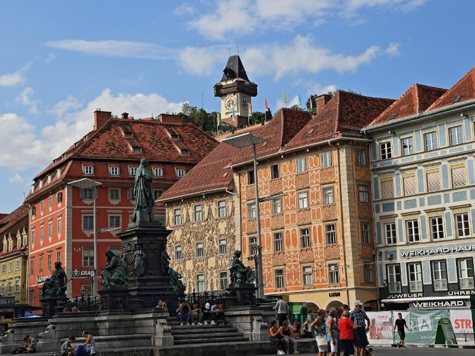
景点：埃根博格城堡 埃根博格宫殿位于省会格拉茨的西部，普拉布茨山脚，是施蒂利亚州最大和最重要的巴洛克式宫殿建筑群。凭借其保存完好的原始家具，历史悠久的宽敞的景观花园以及位于城堡中的乔安娜世界博物馆的藏品，就可以称为是奥地利最有价值的文化资产之一。宫殿公园的北部是行星花园和与其相邻的考古博物馆，钱币收藏和旧画廊被安置在了城堡。埃根博格城堡似乎是一幢17世纪建筑，但建筑核心的大部分可追溯至中世纪晚期和近代早期。作为贵族埃根博格家族的祖传所在地，其建筑和家具的历史表明施蒂利亚州曾经最强大的家族的变化。2010年这座城堡被添加到联合国教科文组织现有的世界遗产格拉茨市-历史中心和艾肯贝格宫的一部分。 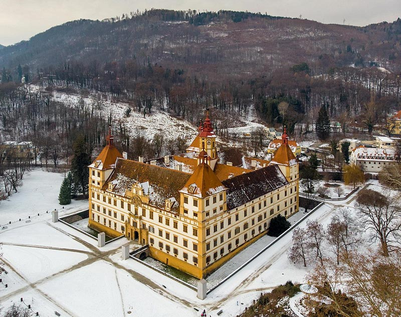
DAY 2：格拉茨
入住地点：同一地点
景点：格拉茨钟楼
格拉茨钟楼是一个28米高的钟楼，是格拉茨的地标，其表盘直径超过5米，并配有镀金指针。格拉茨钟楼的核心大概可以追溯到13世纪，是最古老的建筑之一。大约1265年塔曾是堡垒的一部分。1569年完成了翻新，安装了带有三个大表盘的第一座钟。表盘上有一个木制的城垛在塔周围，那里看到整个市中心。1712年北侧增设了另一个钟面，新的时钟与今天常见的相反，时针较大，从远处可正确读取小时数。 1809年拿破仑军队在第五次联合战争中围攻格拉茨时，钟楼被击中，但并未受到严重损坏。城堡山没有被征服，但还是落入了敌人的手中。 如今塔中仍然保留了三个钟，其中小时钟是格拉茨（1382）最古老的钟，每隔一小时发出一声。2003年，格拉茨成为“ 欧洲文化之都 ”时，钟楼被赋予了所谓的“影子”。这是一座黑色的钢制双塔，由艺术家马库斯·威尔夫林按比例复制的“时钟塔的影子”，目的在于提醒格拉茨纳粹的阴暗一面。2008年-2011年分步骤对钟楼进行了木制城垛的装修和表盘和钟针的翻新。
景点：格拉茨城堡山 格拉茨城堡山早在公元前8世纪就有定居点。1125年左右，在裸露的岩石上建造了一座罗马式城堡，后来以哥特风格进行了扩建，从1544年根据多米尼科•德尔阿利奥的计划改建为文艺复兴式堡垒。 格拉茨城堡山施洛伯格酒店位于一个巨大的白云岩石，穆尔的岸边，并形成了历史悠久的格拉茨老城区的核心，在格拉茨的主要广场上高123 m。除了格拉茨的地标钟楼外，还有列塞尔钟钟楼，施洛伯格炮台，超过100 m深的土耳其喷泉，城堡的所有遗物和许多较小的艺术品，作为格拉茨古城核心的一部分，已列为联合国教科文组织世界遗产，城市格拉茨-历史中心和艾根伯格宫。在吉尼斯世界纪录中被列为有史以来最坚固的堡垒。 拿破仑也无法在19世纪初征服它。直到1809年他占领维也纳并威胁要毁坏首都时，被勒索的格拉茨投降，所有的要塞几乎被夷平，仅保留了钟楼。 1925年年初城堡山500 瓦 - 发射台建成，除了35米高的格子结构外，钟楼还配有天线。1929年创造了当代的替代品。 二战期间，建造了一个隧道系统，长度为6.3公里，20个出入口约12,000平方米的可用空间，其中一部分作为指挥中心。防空掩体可容纳5万人及军队医院。隧道系统与自然洞穴相连，直到1944年为止鲜为人知。
DAY 3：格拉茨—施泰尔—林茨
入住地点：林茨
施泰尔
施泰尔是法定城市，位于上奥地利州的奥地利联邦州，行政之都。施泰尔是奥地利人口最多的第12镇，也是上奥地利州第三大城镇。 这座城市有斯太尔河和恩斯河流经，并在兰贝格城堡和圣迈克尔教堂下方的市中心附近汇合。这个突出的位置使它在整个世纪以来一直容易遭受严重洪灾。 施泰尔是一个古老与现代化设施的小镇，是历史悠久的丰富的文化和建筑遗产的城镇。在经历了对其历史建筑的广泛修复之后，在1980年的1000周年纪念日，被选为该国保存最完好的古镇之一。著名的历史悠久的市中心围绕着城市广场，它最著名的建筑被称为比默豪斯，被认为是哥特式建筑的最好的代表之一。老城区的大多数房屋都建于哥特时期，并在文艺复兴时期，巴洛克时期和洛可可时期得到了“现代化”。 施泰尔周围地区也是最早定居的。约公元前600年 卑诗省凯尔特人移民，他们是第一个开采埃尔兹伯格铁的人。 自14世纪以来，犹太人就一直在这座城市居住，19世纪和20世纪，犹太居民的数量相对较少，是原始产品和商品的小贩和易货。1874年犹太居民建立了自己的犹太墓地。二战后许多犹太难民被安置在施泰尔。自2008年11月以来，施泰尔的纪念馆一直在纪念纳粹时代的86名当地犹太受害者。 1992年11月，施泰尔毛特豪森委员会要求市长以施泰尔犹太人弗里德里希·乌普里尼来命名街道。 2002年竖立了犹太历史纪念碑。 这个城市总是从钢铁贸易中获得财富，大约在1287年就确定了早期的城市宪章。约瑟夫·温德尔出生于1831年，在该镇历史上被称为“施泰尔的救世主”。他创建了现代的系统，制造了后膛装填步枪，使“施泰尔成为“欧洲军械库”，并于1884年展示了欧洲第一条被水电照明的街道。 2015年，施泰尔被授予荣誉称号的欧洲宗教改革市由基督教的欧洲社区。 今天是施泰尔历史悠久的旧城区和现代商业区之间成功结合的原型，因此是奥地利最有趣的城市之一。 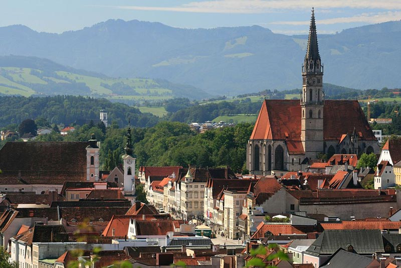
景点：城镇广场及市政厅 城镇广场上最重要的联排别墅可以说是奥地利同类建筑中最杰出的哥特式建筑。城市广场 32.城市的地标被认为是该国保存最完好的哥特式世俗建筑之一。该建筑的一部分可以追溯到13世纪。19世纪，“ Zum GoldenenLöwen”客栈就在这里。今天，您仍然可以看到狮子是figure头。这头狮子对餐厅的访客来说太可爱了，他们称他为“小而肥的狗”。 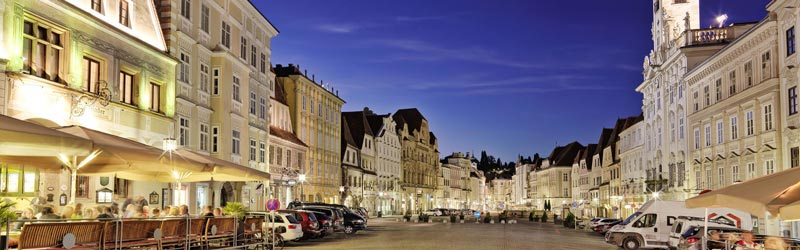
景点：兰伯格城堡 11世纪，这座城堡作为奥塔卡斯家族的住所而获得了重要地位，强大的堡垒仍然保留在原始堡垒中。1727年，整个建筑群在施泰尔的一场灾难性城市大火中被摧毁，由兰伯格伯爵重建为代表性的巴洛克式宫殿。兰伯格贵族图书馆和砂岩人物位于内庭院中。 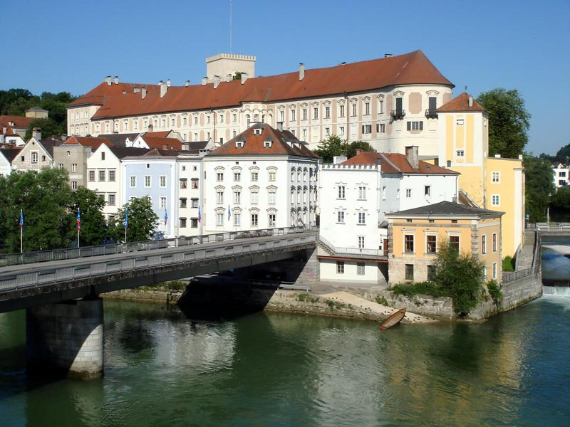
景点：星屋 这栋功能强大，装饰精美的联排别墅位于下镇广场西侧的一排房屋中，以两个新来的人持有的门户上方的金色星星命名，不仅象征着钢铁贸易，而且象征着这座宏伟的建筑曾经属于的斯科伯王朝，并可以看到它的徽章。 斯滕豪斯在1727年的大城市大火中被完全摧毁，并在灾难发生后重建了巴洛克风格的外墙。它以金星而得名，金星由两只猛禽抓住，位于门户上方，是铁交易的象征。窗户上方的天使形象体现了五种人类感官的特质。 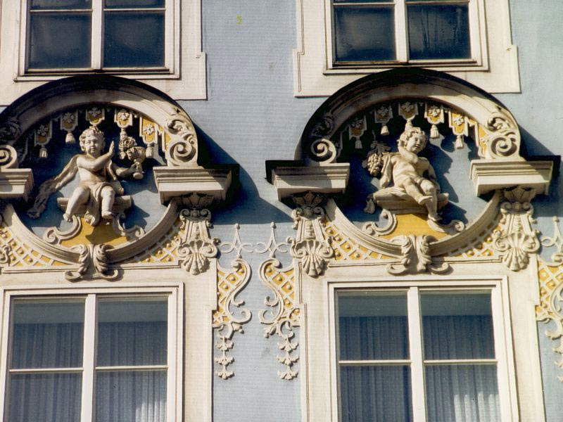
景点：布莫尔房屋 布莫尔房屋位于施泰尔，是哥特式风格，是施泰尔保存最完好的哥特式豪宅，也是奥地利最好的中世纪建筑之一。该建筑的最古老部分可追溯到13世纪。布莫尔房屋是当地的地标性建筑。 房屋采用典型的施泰尔设计，包括面向广场的装饰华丽的立面，后方是房屋和三个带拱廊的庭院。它有一个陡峭的臀部屋顶。面向一楼广场的立面有一个悬臂式石刻宽海湾窗，横跨整个高度，装饰有拱廊和带有四叶形窗饰的丰富饰带，其中五个窗口不对称放置。宽凸窗的狭窄屋顶上方是一堵砖墙山墙，上面有砖砌的拱门。 这座房子的名字的意思是“可爱的小狗”，源于它曾经是一家装饰有狮子的旅馆的历史封印，施泰尔人开玩笑地说它看起来也像只狗。 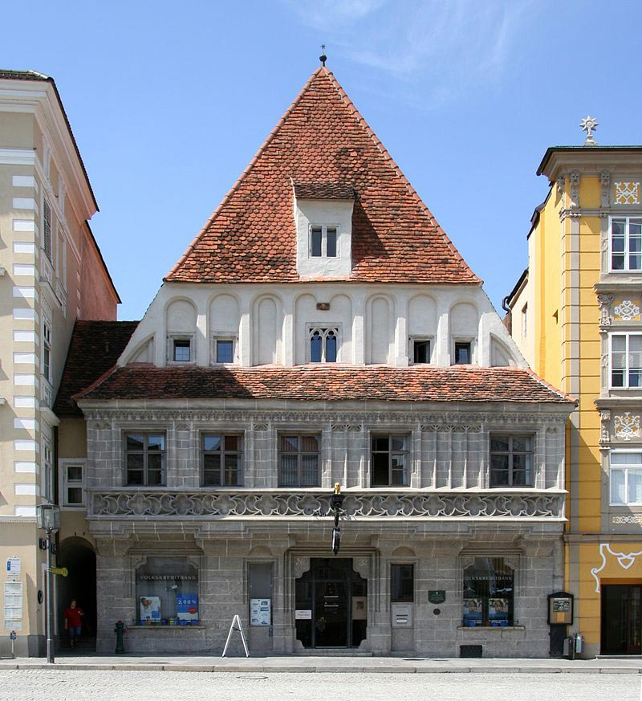
林茨
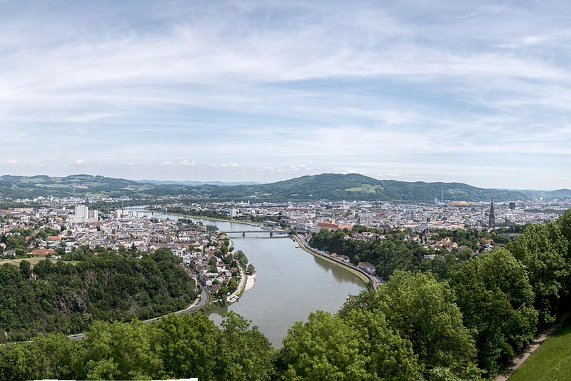
景点：林茨新大教堂 林茨新大教堂又称圣母无原罪大教堂，是罗马天主教大教堂，有20000个座位，是奥地利最大的教堂（长130米，地面5170平方米），比维也纳大教堂短两米。奥匈帝国的时代，没有任何建筑物被允许比维也纳的圣斯蒂芬大教堂的南塔136米高。 1855年皇帝费兰茨·约瑟夫和鲁迪吉尔主教倡议修建大教堂。第一块石块于1862年5月1日奠基，安东·布鲁克纳的节日合唱曲Preiset den Herrn的演出隆重揭幕。1924年，约翰内斯·玛丽亚·格弗纳主教将完工的建筑奉为圣母无原罪主教座堂。 大教堂的彩色玻璃窗。最著名的是林茨之窗，描绘了林茨的历史。窗户还包含教堂建筑的各种赞助商的肖像。第二次世界大战期间，一些窗户，特别是大教堂南部的窗户被损坏。与其还原原始的窗户，不如将它们替换为展示现代艺术品的窗户。教堂的墓穴中的耶稣诞生场景（由S. Osterrieder制作），以及主教鲁迪吉尔的服装陈列。
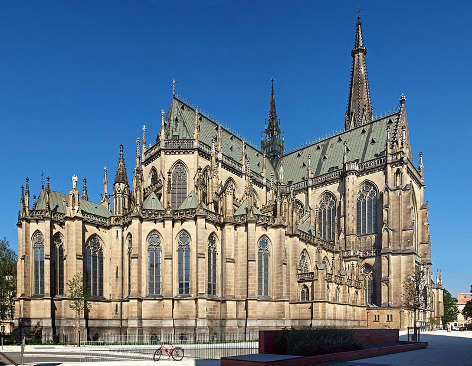
景点：鸽子市场 鸽子市场是上奥地利州林茨市的中央公共广场。广场标记了乡间小路的起点或终点，并在南端以此为边界。北面是施密特大街，西面是长廊，东面是同名街道，构成了陶本市场。由于1880年到1952年间，家禽交易会在这里举办，也可买卖鸽子，故得名。 1716年主广场上竖立了圣三一柱，这比市场更重要。长期以来，只能通过狭窄的多姆加斯进入该广场。1861年通过拆除施密特街，建立与主要广场的连接。在20世纪，鸽子市场成为各种电车和公共汽车路线的中转站。现在它是游客密度最高的城市广场，还是奥地利第三大客流量地区，每周早上8点至晚上7点之间每周有236,000名行人。鸽子市场作为当地客运中心枢纽，对于城市生活尤其重要。
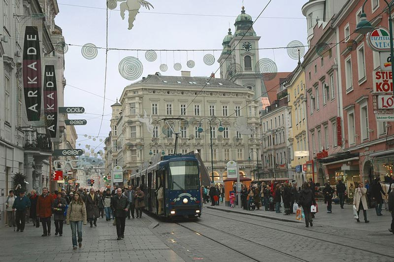
景点：新市政厅 新市政厅于1985年开放，设有市政办公室和城市档案馆。该建筑在该地区中占主导地位，仅前庭和门厅就占地1720平方米，开放空间（例如露台）总计约10,000平方米。该综合大楼位于多瑙河上的乌法尔区（Hauptstrasse 1-5）。是市长和市政委员会所在地的旧市政厅和主要广场。 1977年，林茨市议会决定建造一座新的中央管理大楼。维也纳的建筑师鲁珀特·福尔克纳和安东·富特勒团队胜出。带有众多屋顶露台的建筑群被设计为“可步行的山丘”，让人联想到美索不达米亚之字形。从一开始就引起争议建筑，现被认为是1960年和1970年代的精神中的“巨型建筑”的一个例子。这些独立的“建筑景观”，将大小结构结合在一起，可以以多种方式使用。 新市政厅的宴会厅面积为495平方米，可容纳589人；一楼还设有研讨会室，总面积为221平方米，可容纳150人。额外的展览室面积为81平方米。 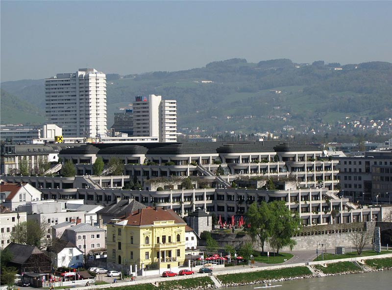
景点：主广场 “林茨的主广场”建于1230年，面积13,200平方米，是欧洲最大的转换的广场之一。在主广场的中间，可见到高高的圣三位一体纪念碑。主广场周围有许多具有历史意义和建筑趣味的房屋，如老市政厅、费希丁格宫及著名的钟琴，会根据季节而改变旋律，基尔希迈尔宫，施密特贝格的房子等。 主广场以西是具有许多其它历史建筑的历史中心，例如文艺复兴时期的房屋或巴洛克风格的老房子。
DAY 4：林茨—圣珀尔滕 —维也纳
入住地点：维也纳
DAY 5：维也纳-布达佩斯
返回布达佩斯
Austria: Quality of Life Begins Here
No country waltzes so effortlessly between urban and outdoors as Austria. One day you’re cresting alpine summits, the next you’re swanning around imperial Vienna. Vienna, Austria’s capital, lies in the country’s east on the Danube River. Its artistic and intellectual legacy was shaped by residents including Mozart, Beethoven and Sigmund Freud. The city is also known for its Imperial palaces, including Schönbrunn, the Habsburgs’ summer residence.
时间
地点
景点（可以 +/- ）
入住地点
第一天
布达佩斯出发347公里
Graz
军械库, 格拉茨钟楼, 格拉茨主广场, Island in the Mur, 宫殿山, 格拉茨艺术馆
第二天
191公里
Eggenberg Palace Graz, Old Town of Graz, 格拉茨州政厅, Schlossberglift Graz, Am Eisernen Tor
Steyr
第三天
42公里
Linz
施泰尔: Bummerlhaus, Museum Arbeitswelt Steyr, Josef Werndl Monument, Stadtpfarrkirche Steyr, Schloss Lamberg, Österreichisches Weihnachtsmuseum (这个城市的景点可根据情况减)
林茨: Ars Electronica Center, 兰多斯艺术博物馆, 林茨新主教座堂, Dreifaltigkeitssäule, 林茨宫殿博物馆, Linz’s main square, voestalpine Stahlwelt - Ausstellung & Museum,
第四天
127公里
66公里
圣珀尔滕
Sankt Pölten
Lower Austria Museum, Diözesanmuseum St. Pölten, Stadtmuseum St. Pölten, Klangturm, Franz Schubert-Brunnen
维也纳
Vienna
第五天
243公里到布达佩斯
霍夫堡, Schönbrunn Palace, 斯蒂芬主教座堂, 维也纳国立歌剧院, 美景宫, 米歇尔广场
-
6天5夜乌克兰小众深度游
7天6夜克罗地亚、波黑小众
5天4夜波兰、斯洛伐克小众
四天三夜奥地利、斯洛文尼亚
匈牙利最大的滑雪场一日游
6天5夜，奥地利滑雪自由行
7天6夜，奥地利旅游滑雪自
4天3夜，奥地利滑雪自由行
Copyright 2020 www.rrjourneys.com
人人游 旅游官方网站 版权所有 All Rights Reserved